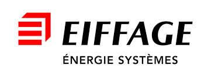

Explorez les différents stands du salon.
Cliquez sur le bouton correspondant pour vous déplacer automatiquement jusqu’au stand et découvrir la démonstration associée.
Participez également à nos ateliers thématiques.
Cliquez sur l’atelier de votre choix pour vous rendre directement dans la zone correspondante.